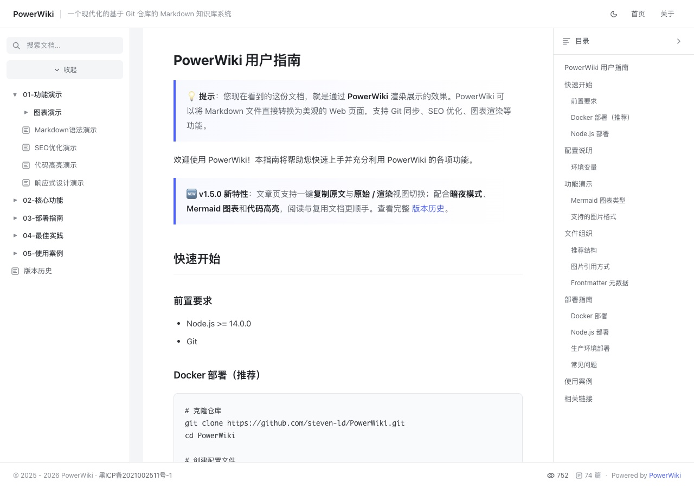

HTML 页面里通常写的是相对地址。PowerWiki 在服务端解析它们，所以不需要为 Wiki 额外改写源文件。
| 页面里写的 | 文章里变成 | 类型 |
|---|---|---|
../../images/home.jpg |
/api/image/images/home.jpg |
图片 |
基础示例.html |
/post/01-功能演示/HTML页面演示/基础示例.html |
HTML 文章 |
../代码高亮演示.md |
/post/01-功能演示/代码高亮演示.md |
Markdown 文章 |
static/demo.txt |
/01-功能演示/HTML页面演示/static/demo.txt |
静态文件 |
图片按页面所在目录解析，越出仓库的路径会被拒绝：

页面同级的 static/ 用来放资源。相对引用会被改写到该目录：
非图片资源也可以直接链接：
/static/...、/api/image/... 这类以 / 开头的地址本来就是站点地址，会被原样保留。它们在命中同级 static/ 时，依靠文章页面提供的 Referer 映射回仓库目录。
带协议的地址不做改写：
提示：target="_blank" 的链接会自动补上 rel="noopener noreferrer"。